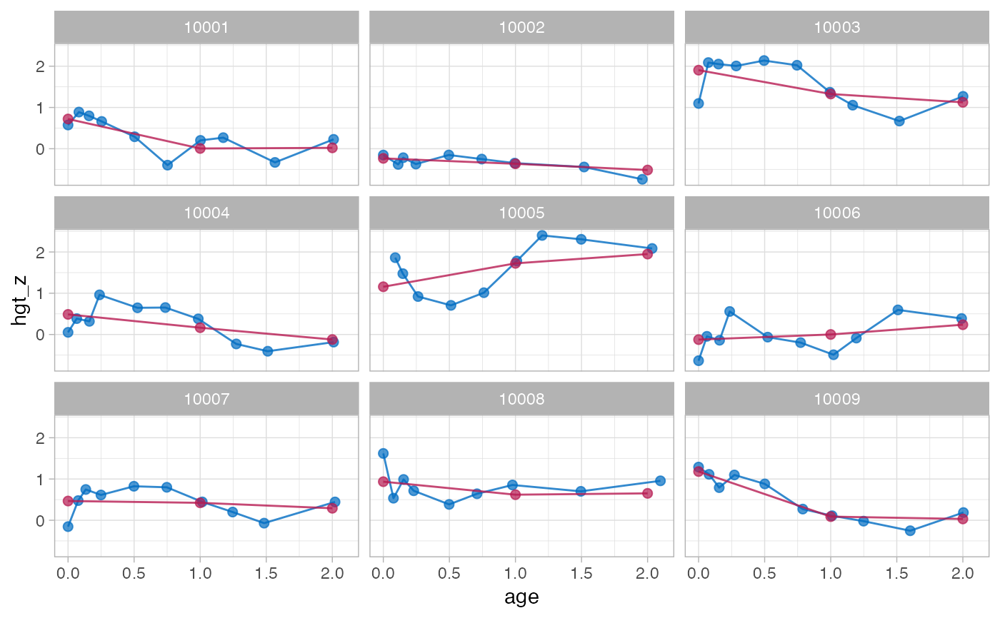

The brokenstick() function fits an irregularly observed series
of measurements onto a user-specified grid of points (knots).
The model codes the grid by a series of linear B-splines.
Each modelled trajectory consists of straight lines that join at
the chosen knots and look like a broken stick. Differences between
observations are expressed by a random effect per knot.
Usage
brokenstick(
formula,
data,
knots = NULL,
boundary = NULL,
k = 5L,
degree = 1L,
method = c("kr", "lmer"),
control = set_control(method = method, ...),
na.action = na.exclude,
light = FALSE,
hide = c("right", "left", "boundary", "internal", "none"),
...
)Arguments
- formula
A formula specifying the outcome, the predictor and the group variable in
data. The generic shape isformula = y ~ x | group. The left-hand side is the outcome, the right-hand side the predictor, and the name of the grouping variable occurs after the|sign. Formula treatment is non-standard: 1)yandxshould be numeric, 2) only one variable is allowed in each model term (additional variables will be ignored).- data
A data frame or matrix containing the outcome (numeric), predictor (numeric) and group (numeric, factor, character) variable.
- knots
Optional, but recommended. Numerical vector with the locations of the internal knots to be placed on the values of the predictor. The function sorts the internal knots in increasing order.
- boundary
Optional, but recommended. Numerical vector of length 2 with the left and right boundary knot. The
boundarysetting is passed tosplines::bs()as theBoundary.knotsargument. If not specified, the function determines the boundary knots asrange(x). When specified, theboundaryrange is internally expanded to include at leastrange(knots).- k
Optional, a convenience parameter for the number of internal knots. If specified, then
kinternal knots are placed at equidense quantiles of the predictor. For example, specifyingk = 1puts a knot at the 50th quantile (median), settingk = 3puts knots at the 25th, 50th and 75th quantiles, and so on. If the user specifies bothkandknotsarguments thenknotstakes precedence. The default isk = 5, so if the user does not specify any ofknots,boundaryork, then the knots will be at the 16th, 33th, 50th, 66th and 84th quantile of the predictor.- degree
the degree of the spline. The broken stick model requires linear splines, so the default is
degree = 1. Settingdegree = 0yields (crisp) dummy coding, and one column less than fordegree = 1. Thebrokenstickpackage supports onlydegree = 0anddegree = 1.- method
Estimation method. Either
"kr"(for the Kasim-Raudenbush sampler) or"lmer"(forlme4::lmer()). Version 1.1.1.9000 changed the default tomethod = "kr".- control
List of control options returned by
set_control()used to set algorithmic details. A list with parameters. When not specified, the functions sets to defaults for method"kr"bycontrol_kr(), and for method"lmer"bylme4::lmerControl(). For ease of use, the user may set individual options to"kr"(e.g.niter = 500) via the ... arguments.- na.action
A function that indicates what
lme4::lmer()should so when the data containNAs. Default set tona.exclude. Only used by method"lmer".- light
Should the returned object be lighter? If
light = TRUEthe returned object will contain only the model settings and parameter estimates and not store thedata,impandmodelements. The light object can be used to predict broken stick estimates for new data, but does not disclose the training data and is very small (often <20 Kb).- hide
Should output for knots be hidden in get, print, summary and plot functions? Can be
"left","right","boundary","internal"or"none". The default is"right".- ...
Forwards arguments to
control_kr().
Details
The choice between method = "kr" and method = "lmer" depends on the size
of the data and the complexity of the model. In general, setting method = "lmer"
can require substantial calculation time for more complex models
(say > 8 internal knots) and may not converge. Method "kr" is less
sensitive to model complexity and small samples, and has the added benefit that the
variance-covariance matrix of the random effects can be constrained through the
cormodel argument. On the other hand, "lmer" is the better-researched
method, and is more efficient for simpler models and datasets with many
rows.
The default algorithm since version 2.0 is the Bayesian Kasim-Raudenbush
sampler (method = "kr"). The variance-covariance matrix of the broken stick
estimates absorbs the relations over time. The "kr" method allows
enforcing a simple structure on this variance-covariance matrix. Currently,
there are three such correlation models: "none" (default), "argyle"
and "cole". Specify the seed argument for reproducibility.
See control_kr() for more details.
The alternative method = "lmer" fits the broken stick model by
lme4::lmer(). With this method, the variance-covariance matrix can only be
unstructured. This estimate may be unstable if the number of children is
small relative to the number of specified knots. The default setting
in lme4::lmerControl() is check.nobs.vs.nRE= "stop". The
[set_control()] function changes this to check.nobs.vs.nRE= "warning"
by default, since otherwise many broken stick models would not run at all.
The method throws warnings that estimates are not stable. It can be time
for models with many internal knots. Despite the warnings,
the results often look reasonable.
Diagnostics with coda and lme4: The function returns an object
of class brokenstick. For method = "kr" the list component named
"mod" contains a list of mcmc objects that can be further analysed with
coda::acfplot(), coda::autocorr(), coda::crosscorr(), coda::cumuplot(),
coda::densplot(), coda::effectiveSize(), coda::geweke.plot(),
coda::raftery.diag(), coda::traceplot() and the usual plot()
and summary() functions. For method = "lmer" the list component named
"mod" contains an object of class lme4::merMod. These model objects
are omitted in light brokenstick objects.
Note
Note that automatic knot specification is data-dependent, and may not reproduce
on other data. Likewise, knots specified via k are data-dependent and do not transfer
to other data sets. Fixing the model requires specifying both knots and
boundary.
Examples
# \donttest{
data <- smocc_200[1:1198, ]
# using kr method, default
f1 <- brokenstick(hgt_z ~ age | id, data, knots = 0:2, seed = 123)
plot(f1, data, n_plot = 9)

# study sampling behaviour of the sigma2 parameter with coda
library("coda")
plot(f1$mod$sigma2)
 acfplot(f1$mod$sigma2)
acfplot(f1$mod$sigma2)
 # using lmer method
f2 <- brokenstick(hgt_z ~ age | id, data, knots = 0:2, method = "lmer")
plot(f2, data, n_plot = 9)
# using lmer method
f2 <- brokenstick(hgt_z ~ age | id, data, knots = 0:2, method = "lmer")
plot(f2, data, n_plot = 9)
 # drill down into merMod object with standard diagnostics in lme4
summary(f2$mod)
#> Linear mixed model fit by REML ['lmerMod']
#> Formula: hgt_z ~ 0 + age_0 + age_1 + age_2 + age_2.6776 + (0 + age_0 +
#> age_1 + age_2 + age_2.6776 | id)
#> Data: data
#> Control: control
#>
#> REML criterion at convergence: 2088.7
#>
#> Scaled residuals:
#> Min 1Q Median 3Q Max
#> -3.8278 -0.5282 0.0026 0.5651 3.4227
#>
#> Random effects:
#> Groups Name Variance Std.Dev. Corr
#> id age_0 1.2928 1.1370
#> age_1 0.6760 0.8222 0.47
#> age_2 0.7082 0.8415 0.45 0.93
#> age_2.6776 3.5696 1.8894 0.45 0.58 0.63
#> Residual 0.1783 0.4222
#> Number of obs: 1185, groups: id, 124
#>
#> Fixed effects:
#> Estimate Std. Error t value
#> age_0 -0.02596 0.10451 -0.248
#> age_1 0.03550 0.07838 0.453
#> age_2 0.05764 0.08690 0.663
#> age_2.6776 0.56344 0.75767 0.744
#>
#> Correlation of Fixed Effects:
#> age_0 age_1 age_2
#> age_1 0.407
#> age_2 0.394 0.719
#> age_2.6776 0.089 0.167 -0.114
plot(f2$mod)
# drill down into merMod object with standard diagnostics in lme4
summary(f2$mod)
#> Linear mixed model fit by REML ['lmerMod']
#> Formula: hgt_z ~ 0 + age_0 + age_1 + age_2 + age_2.6776 + (0 + age_0 +
#> age_1 + age_2 + age_2.6776 | id)
#> Data: data
#> Control: control
#>
#> REML criterion at convergence: 2088.7
#>
#> Scaled residuals:
#> Min 1Q Median 3Q Max
#> -3.8278 -0.5282 0.0026 0.5651 3.4227
#>
#> Random effects:
#> Groups Name Variance Std.Dev. Corr
#> id age_0 1.2928 1.1370
#> age_1 0.6760 0.8222 0.47
#> age_2 0.7082 0.8415 0.45 0.93
#> age_2.6776 3.5696 1.8894 0.45 0.58 0.63
#> Residual 0.1783 0.4222
#> Number of obs: 1185, groups: id, 124
#>
#> Fixed effects:
#> Estimate Std. Error t value
#> age_0 -0.02596 0.10451 -0.248
#> age_1 0.03550 0.07838 0.453
#> age_2 0.05764 0.08690 0.663
#> age_2.6776 0.56344 0.75767 0.744
#>
#> Correlation of Fixed Effects:
#> age_0 age_1 age_2
#> age_1 0.407
#> age_2 0.394 0.719
#> age_2.6776 0.089 0.167 -0.114
plot(f2$mod)
 # a model with more knots
knots <- round(c(0, 1, 2, 3, 6, 9, 12, 15, 18, 24, 36) / 12, 4)
# method kr takes about 2 seconds
f3 <- brokenstick(hgt_z ~ age | id, data, knots, seed = 222)
plot(f3, data, n_plot = 9)
# a model with more knots
knots <- round(c(0, 1, 2, 3, 6, 9, 12, 15, 18, 24, 36) / 12, 4)
# method kr takes about 2 seconds
f3 <- brokenstick(hgt_z ~ age | id, data, knots, seed = 222)
plot(f3, data, n_plot = 9)
 # method lmer takes about 40 seconds
f4 <- brokenstick(hgt_z ~ age | id, data, knots, method = "lmer")
#> Warning: number of observations (=1185) <= number of random effects (=1364) for term (0 + age_0 + age_0.0833 + age_0.1667 + age_0.25 + age_0.5 + age_0.75 + age_1 + age_1.25 + age_1.5 + age_2 + age_3 | id); the random-effects parameters and the residual variance (or scale parameter) are probably unidentifiable
#> boundary (singular) fit: see help('isSingular')
plot(f4, data, n_plot = 9)
# method lmer takes about 40 seconds
f4 <- brokenstick(hgt_z ~ age | id, data, knots, method = "lmer")
#> Warning: number of observations (=1185) <= number of random effects (=1364) for term (0 + age_0 + age_0.0833 + age_0.1667 + age_0.25 + age_0.5 + age_0.75 + age_1 + age_1.25 + age_1.5 + age_2 + age_3 | id); the random-effects parameters and the residual variance (or scale parameter) are probably unidentifiable
#> boundary (singular) fit: see help('isSingular')
plot(f4, data, n_plot = 9)
 # }
# }